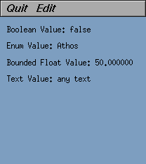
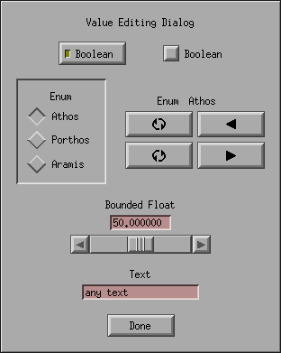

formdemo
formdemo shows the current value of four different datums: a boolean,
an enum, a numeric, and text. The Edit button brings up a window with
various glyphs for changing their values.

main window

popup window
next example program gclock
up to ivtools home page.